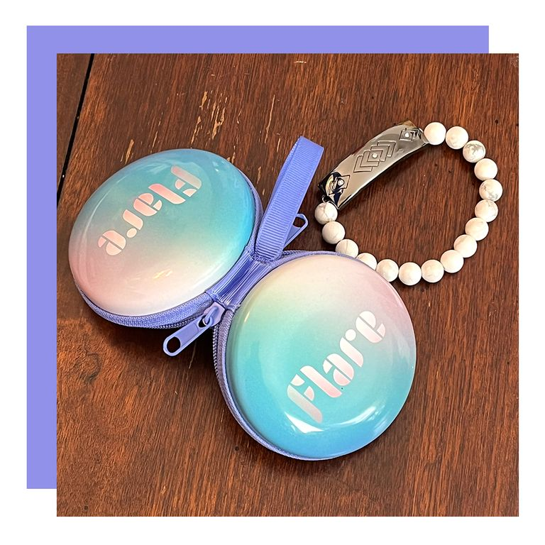
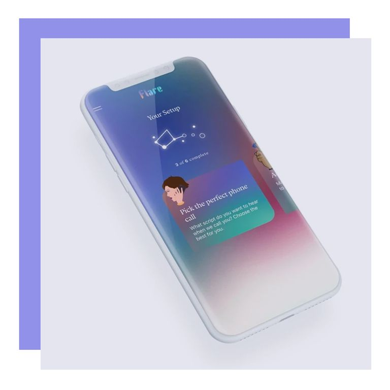
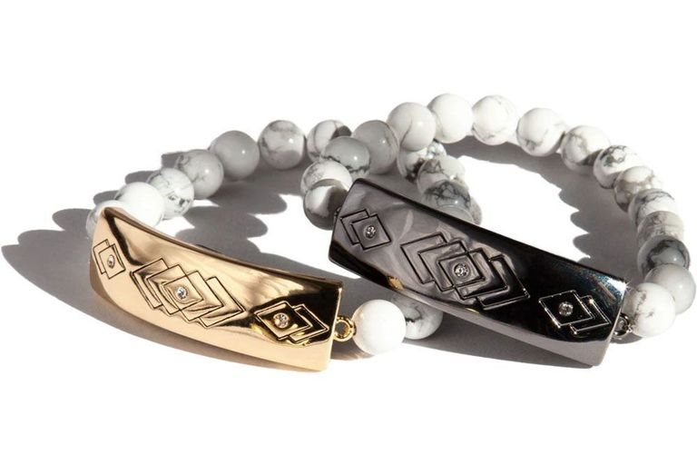

The Flare Smart Bracelet combines cute jewelry with real-world needs. A cross between a Life Alert necklace and chic accessory, it provides the wearer with a discreet and immediate way to call for backup (or, heaven forbid, 911). Named one of the top 100 inventions of 2020 by Time, it offers extra safety to those who need it.
Even though I am married with children, I spend quite a bit of my time alone. Between heading out for runs to keep up my running streak and working from home, I am alone well over half of every day. Most of the time I feel perfectly safe — but not always. I know I'm not the only woman/femme who feels this way. In fact, the creators of the bracelet, Sara Dickhaus de Zárraga and Quinn Fitzgerald, are both survivors themselves.
They understand that going out as a non-male person has always been fraught. There's good reason why many of us carry keys between our fingers and text contacts before getting in an Uber or Lyft. I don't know of a woman who couldn't tell you what it's like to be followed or creeped out by a guy in a bar. And most of my female, femme, nonbinary, and trans running friends have been harassed on a run by a man. Running in super public spaces doesn't always protect you, and the same goes for hanging out in crowded bars or coffee shops.
The Flare Smart Bracelet gives you an extra layer of protection: You connect the smart bracelet to your iPhone (it's not available on Android yet) via Bluetooth, and if you're in an uncomfortable situation, you can tap the bracelet and an alert with your GPS location and a preprogrammed message will be sent to five contacts you choose. If you hit a different button, you'll receive an incoming call that gives you an excuse to leave the situation without raising suspicion. The last button is optional, but I believe critical: You can hit a button for a distress 911 call to be made in your area, complete with your GPS location.
There's so much to appreciate about this bracelet. If you get into an emergency at home or when you're alone, you can get ahold of someone provided you're within GPS range of your phone. It's also far easier than making a call. This could be great not only for people like me, but for older people who live alone and might have mobility issues or health issues. It doesn't feel like an “old-person alarm,” as my MawMaw so lovingly referred to her Life Alert necklace: It's a gorgeous bracelet that just so happens to be incredibly well-connected.
The cool thing about the Flare Smart Bracelet is that you can program the distress message. (Mine is set up to read, “Cat needs you. Call her, if she doesn't answer, go here.“) It is instant help when you don't feel safe. I can only speak to my experience as a cis white Jewish woman, but I believe that this bracelet could be potentially life-saving for people in many marginalized communities, who deal with very real threats to their lives on a near-daily basis.
The Flare Bracelet is so genius because it is truly incognito. There are several styles to choose from, and they all resemble a fun piece of fashion jewelry. And there's no need to recharge or replace any batteries. Once the battery is nearing the end of its life after 1 or 2 years, Flare will email you, and a replacement bracelet is only $89 (as opposed to the $129 a new bracelet costs). There are no monthly fees, and everything is set up via the Flare app in your phone. Alternatively, you can sign up for a subscription plan of $98 per year, and they send you a new bracelet annually.
After testing this bracelet out, I have already bought one for my niece and for my daughter. I will feel so much better knowing that they have this extra layer of security when they're out and about or home alone. Buying it for yourself or a loved one is a no-brainer. I do wish that it was available for Android, and the company says it's working toward that. But for now, iPhone users should definitely get their hands on one.